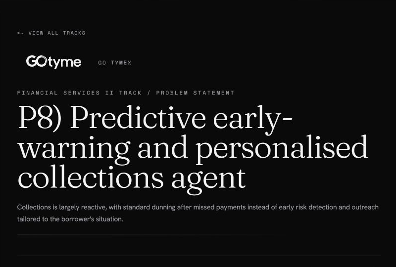
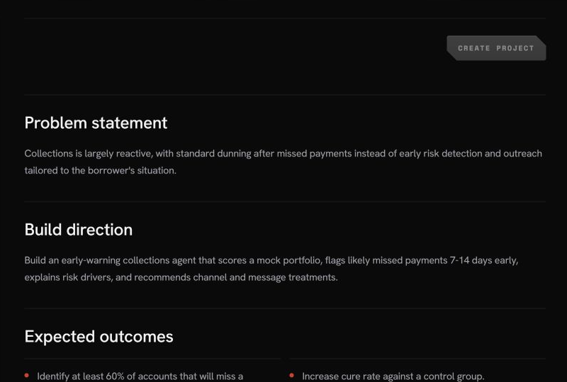
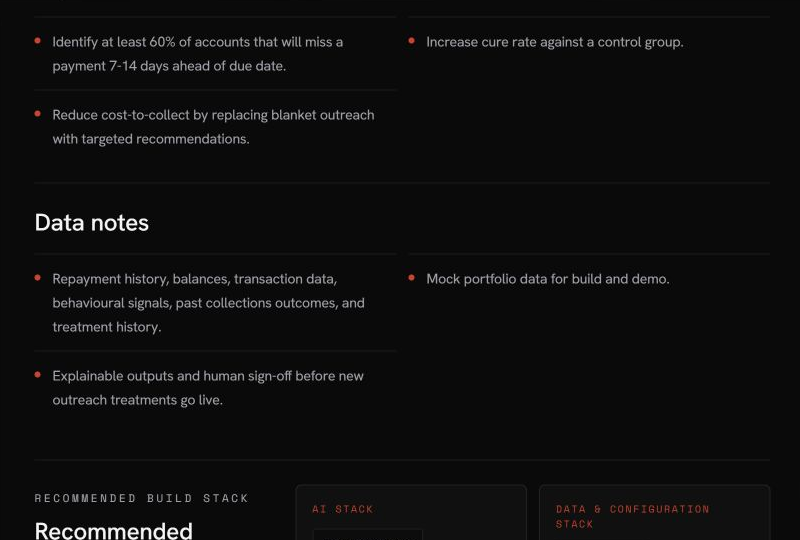
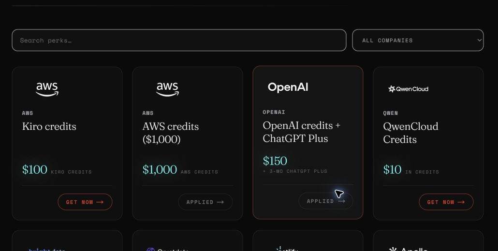

Agentic AI Build Week 2026 · Financial Services II
Designing a Predictive Collections Agent That Acts Before a Payment Is Missed
How I reframed collections as a cash, customer, and governance problem—and designed an agentic decision loop that detects risk early, recommends the next best action, keeps humans accountable, and learns only through controlled approval.
Article at a glance
One decision loop, three design principles.
Move from reactive dunning to a 7–14 day early-warning window.
Separate scoring, treatment, outreach, and learning into auditable decisions.
Measure cure uplift, cost-to-collect, cash timing, and customer guardrails.
On this page 10 sections
The reframing
Collections usually starts after the problem has already happened.
A missed payment creates an obvious signal, but it is also a late one. By the time a traditional collections workflow reacts, the institution is managing arrears instead of preventing them. The customer may receive the same reminder sequence as everyone else, while collectors spend time sorting cases that could have been prioritised earlier.
During Agentic AI Build Week 2026, the challenge was to move that decision upstream: identify likely missed payments 7–14 days before the due date, explain the risk drivers, and recommend a channel and message treatment that fits the borrower’s situation.
The design question was not “How do we automate more messages?” It was “How do we intervene earlier, more selectively, and with more accountability?”
Official brief · readable version
The source requirements, transcribed as accessible HTML.
Collections is largely reactive, with standard dunning after missed payments instead of early risk detection and outreach tailored to the borrower’s situation.
Score a mock portfolio, flag likely missed payments 7–14 days early, explain the risk drivers, and recommend channel and message treatments.
Use repayment history, balances, transactions, behavioural signals, past outcomes, and treatment history—with mock data, explainable outputs, and human sign-off before new treatments go live.



Interactive case deck
Explore the full story—from workflow to economics and roadmap.
Use the arrow controls, keyboard arrows, or space bar inside the deck. The presentation contains six chapters: the problem, target workflow, business case, product demo, roadmap, and executive Q&A.
Predictive Early-Warning Collections Agent
A finance-led product concept with explainable risk, next-best action, and two human approval gates.
 Open the interactive deck
Open the interactive deck
The embedded deck is optimised for desktop. On a phone—or if reduced motion is enabled—open the full presentation for the clearest experience.
Open presentationThe operating model
I designed a governed decision loop—not one oversized AI agent.
Prediction, treatment, language generation, approval, execution, and learning are separate decisions. That separation makes the workflow easier to explain, test, audit, and improve.
Bring the signals together
Profile, repayment history, balances, transactions, behaviour, and prior collections outcomes form a daily early-warning view.
Score risk and show the reason
A risk matrix and Risk Agent flag likely misses, assign a risk band, and expose reviewer-friendly reason codes instead of a black-box score.
Select the next best action
A treatment matrix and Treatment Agent recommend channel, timing, tone, and route based on risk, customer context, policy, and past outcomes.
Generate the proposal package
The Message Agent prepares customer-facing language together with the treatment rationale, channel, timing, and escalation conditions.
Keep a human before action
A reviewer can approve, edit, reject, or escalate. Hardship, legal, sensitive, or high-risk cases can be routed away from automated contact.
Measure outcomes, then govern change
Paid, cured, missed, response, cost, and complaint outcomes feed the next cycle—but matrix changes go live only after a second human impact review.
The first approval gate protects customer-facing action. The second protects the learning loop. Human-in-the-loop is therefore not a disclaimer at the end of the design; it is part of the system architecture.
One illustrative account
Personalisation should change the decision—not just insert a customer name.
In the synthetic demo, account C-10482 receives a high-risk score because its repayment pattern has weakened and its balance has spiked. A field visit is not permitted. The system therefore avoids an aggressive default path and proposes a softer pre-due-date reminder with a secure payment link.
The recommendation package
The treatment is contextual, explainable, and reversible before anything reaches the customer.
- Why flaggedLate-payment pattern and an unusual balance increase.
- First actionSupportive SMS reminder before the due date with a payment link.
- Back-upEmail or app notification if the first channel is ineffective.
- EscalationRoute to a human after no response or when the case becomes sensitive.
- ControlReviewer approval is required before outreach.
The finance case
A useful AI concept should survive a CFO conversation.
I built an illustrative steady-state model to show where value could come from: lower blanket-contact volume, better prioritisation of human effort, earlier cash recovery, and more portfolio capacity for the same operating budget.
Lower recurring cost
Modelled monthly cost falls from VND 1.014B to VND 625M, a VND 389M saving.
Account capacity
The same monthly budget supports approximately 162K accounts instead of 100K.
VND monthly cash
Illustrative additional principal collected under a +10 percentage-point cure assumption.
Simple payback
Steady-state model using a VND 1.5B one-time implementation assumption.
The model also changes the people story. The equivalent capacity of 13 FTE is framed as workload that can be redeployed or avoided as the portfolio grows—not as a layoff claim. Good automation economics should explain where capacity goes, not treat people as a balancing figure.
The proof plan
The right next step is a controlled pilot—not a full rollout.
A promising workflow still has to prove prediction quality, incremental treatment value, customer safety, and sustainable unit economics. I would use a representative cohort and a control group, then scale only after both value and guardrails are demonstrated.
Prediction quality
- Missed-payment capture 7–14 days early
- Precision and false-positive rate
- Reason-code stability and drift
Incremental treatment value
- Cure-rate uplift versus control
- Days paid earlier and principal protected
- Channel and treatment effectiveness
Economics
- Cost-to-collect per cured account
- Collector capacity and approval time
- Model, message, and infrastructure cost
Customer guardrails
- Complaints, opt-outs, and contact pressure
- Hardship and vulnerability routing
- Policy exceptions and prohibited channels
Human accountability
- Approve, edit, reject, and escalation rates
- Reviewer agreement with risk explanations
- Audit completeness and decision traceability
Scale readiness
- Daily scoring reliability and data quality
- Channel, core-system, and CRM integration
- Monitoring, rollback, and change governance
From concept to capability
Every phase ends with a decision gate.
The roadmap keeps ambition high without presenting a hackathon concept as a finished production system. What becomes reusable is more than a model: it is agent intelligence, governance controls, integration components, validated matrices, and a delivery playbook.
Concept PoC
Workflow, mock data, target KPIs, HITL concept, and demonstration.
Institution fit
Data readiness, policy fit, risk/treatment matrices, and technical architecture.
Controlled pilot
Shadow mode, control cohort, measurable uplift, and guardrail validation.
Production product
Reliable integrations, MLOps/LLMOps, monitoring, security, and rollback.
Repeatable offering
Configurable modules, APIs, multi-portfolio governance, and deployment playbooks.
AABW perks and build stack
Program support mattered when it removed a real build constraint.
The AABW portal offered 30 partner perks. I distinguish what I activated and used from what was simply available. Credits accelerated experimentation; they did not replace financial judgment, governance choices, or accountability for the final story.

AWS credits
US$1,000I used the AWS path to set up an AgentCore CLI project and a Bedrock AgentCore harness with a Claude Sonnet model. This tested the deployment architecture; the public dashboard remains a safe mock-data PoC.
OpenAI credits + ChatGPT Plus
US$150 + 3 monthsI used AI assistance for rapid research synthesis, decision-flow iteration, coding support, narrative refinement, and QA—while keeping the risk logic, finance assumptions, and governance decisions explicit.
Netlify monthly credits
300 credits / monthThe final React/Vite prototype includes a Netlify build configuration and SPA redirect. I treat Netlify as a delivery path, not as part of the agent’s decision logic, and do not claim the credit was consumed.
Decision and evidence layer
- Synthetic portfolio and feature data
- Explainable risk matrix and test cases
- Treatment logic and approval workflow
- Illustrative finance model and roadmap
Prototype experience
- React 19, TypeScript, and Vite
- TanStack Router and Recharts
- Human approval, portfolio, and outcome views
- Mock data only; no production customer records
Agent and delivery path
- Amazon Bedrock AgentCore harness experiment
- HTML, CSS, JavaScript, SVG, and MP4 case deck
- Netlify-ready static prototype configuration
- Controlled pilot before any live outreach
What I learned
The strongest part of an agent is often the operating model around it.
This build reinforced four lessons. First, a single prompt is not an operating model: scoring, recommendation, messaging, approval, and learning need separate responsibilities. Second, explainability is useful only when it helps a reviewer make a better decision. Third, economics become credible when assumptions are visible and cash is not confused with revenue. Finally, “human-in-the-loop” is meaningful only when people have clear authority to approve, edit, reject, escalate, and stop the system.
That is why I describe this project as a governed finance decision product, not an autonomous collections bot. The LLM is one component. The value comes from the full loop: better timing, better treatment, accountable action, measurable outcomes, and controlled change.
Technology should improve the decision without removing judgment.
This project sits at the intersection of working capital, credit operations, customer experience, financial modelling, and responsible AI. The next milestone is not “more autonomy.” It is better evidence: a controlled pilot that proves whether early warning and personalised treatment create incremental value while protecting the customer and the institution.